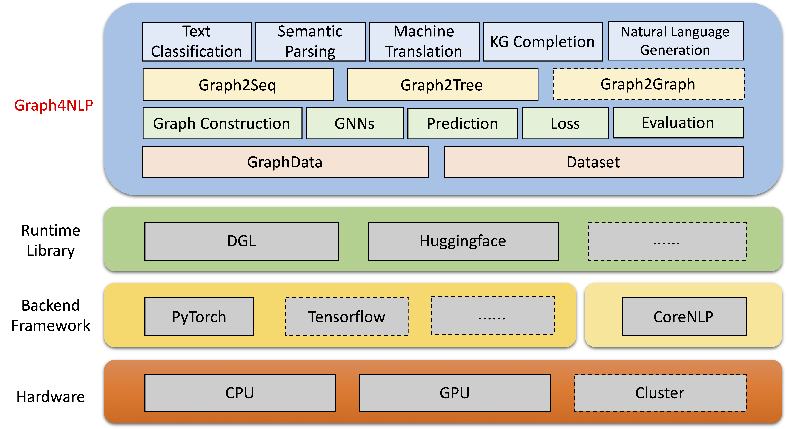
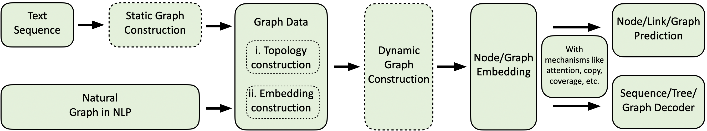

Graph4NLP
Graph4NLP is an easy-to-use library for R&D at the intersection of Deep Learning on Graphs and Natural Language Processing (i.e., DLG4NLP). It provides both full implementations of state-of-the-art models for data scientists and also flexible interfaces to build customized models for researchers and developers with whole-pipeline support. Built upon highly-optimized runtime libraries including DGL , Graph4NLP has both high running efficiency and great extensibility. The architecture of Graph4NLP is shown in the following figure, where boxes with dashed lines represents the features under development. Graph4NLP consists of four different layers: 1) Data Layer, 2) Module Layer, 3) Model Layer, and 4) Application Layer.

Figure: Graph4NLP Overall Architecture
Graph4NLP news
06/05/2021: The v0.4.1 release. Try it out!
Quick tour
Graph4nlp aims to make it incredibly easy to use GNNs in NLP tasks (check out Graph4NLP Documentation). Here is an example of how to use the Graph2seq model (widely used in machine translation, question answering, semantic parsing, and various other NLP tasks that can be abstracted as graph-to-sequence problem and has shown superior performance).
We also offer other high-level model APIs such as graph-to-tree models. If you are interested in DLG4NLP related research problems, you are very welcome to use our library and refer to our graph4nlp survey.
```python from graph4nlp.pytorch.datasets.jobs import JobsDataset from graph4nlp.pytorch.modules.graph_construction.dependency_graph_construction import DependencyBasedGraphConstruction from graph4nlp.pytorch.modules.config import get_basic_args from graph4nlp.pytorch.models.graph2seq import Graph2Seq from graph4nlp.pytorch.modules.utils.config_utils import update_values, get_yaml_config
build dataset
jobs_dataset = JobsDataset(root_dir='graph4nlp/pytorch/test/dataset/jobs', topology_builder=DependencyBasedGraphConstruction, topology_subdir='DependencyGraph') # You should run stanfordcorenlp at background vocab_model = jobs_dataset.vocab_model
build model
user_args = get_yaml_config("examples/pytorch/semantic_parsing/graph2seq/config/dependency_gcn_bi_sep_demo.yaml") args = get_basic_args(graph_construction_name="node_emb", graph_embedding_name="gat", decoder_name="stdrnn") update_values(to_args=args, from_args_list=[user_args]) graph2seq = Graph2Seq.from_args(args, vocab_model)
calculation
batch_data = JobsDataset.collate_fn(jobs_dataset.train[0:12])
scores = graph2seq(batch_data["graph_data"], batch_data["tgt_seq"]) # [Batch_size, seq_len, Vocab_size] ```
Overview
Our Graph4NLP computing flow is shown as below.

Graph4NLP Models and Applications
Graph4NLP models
- Graph2Seq: a general end-to-end neural encoder-decoder model that maps an input graph to a sequence of tokens.
- Graph2Tree: a general end-to-end neural encoder-decoder model that maps an input graph to a tree structure.
Graph4NLP applications
We provide a comprehensive collection of NLP applications, together with detailed examples as follows:
- Text classification: to give the sentence or document an appropriate label.
- Semantic parsing: to translate natural language into a machine-interpretable formal meaning representation.
- Neural machine translation: to translate a sentence in a source language to a different target language.
- summarization: to generate a shorter version of input texts which could preserve major meaning.
- KG completion: to predict missing relations between two existing entities in konwledge graphs.
- Math word problem solving: to automatically solve mathematical exercises that provide background information about a problem in easy-to-understand language.
- Name entity recognition: to tag entities in input texts with their corresponding type.
- Question generation: to generate an valid and fluent question based on the given passage and target answer (optional).
Performance
| Task | Dataset | GNN Model | Graph construction | Evaluation | Performance |
|----------------------------|:--------------------------------:|:-------------------:|----------------------------------------------|--------------------|:-----------------------------:|
| Text classification | TRECT
CAirline
CNSST
| GAT | Dependency | Accuracy | 0.948
0.769
0.538
|
| Semantic Parsing | JOBS | SAGE | Constituency | Execution accuracy | 0.936 |
| Question generation | SQuAD | GGNN | Dependency | BLEU-4 | 0.15175 |
| Machine translation | IWSLT14 | GCN | Dynamic | BLEU-4 | 0.3212 |
| Summarization | CNN(30k) | GCN | Dependency | ROUGE-1 | 26.4 |
| Knowledge graph completion | Kinship | GCN | Dependency | MRR | 82.4 |
| Math word problem | MAWPS
MATHQA | SAGE | Dynamic | Solution accuracy
Exact match | 76.4
61.07 |
Installation
Currently, users can install Graph4NLP via pip or source code. Graph4NLP supports the following OSes:
- Linux-based systems (tested on Ubuntu 18.04 and later)
- macOS (only CPU version)
- Windows 10 (only support pytorch >= 1.8)
Installation via pip (binaries)
We provide pip wheels for all major OS/PyTorch/CUDA combinations. Note that we highly recommend Windows users refer to Installation via source code due to compatibility.
Ensure that at least PyTorch (>=1.6.0) is installed:
Note that >=1.6.0 is ok.
``` bash
$ python -c "import torch; print(torch.version)"
1.6.0 ```
Find the CUDA version PyTorch was installed with (for GPU users):
```bash $ python -c "import torch; print(torch.version.cuda)"
10.2 ```
Install the relevant dependencies:
torchtext is needed since Graph4NLP relies on it to implement embeddings.
Please pay attention to the PyTorch requirements before installing torchtext with the following script! For detailed version matching please refer here.
bash
pip install torchtext # >=0.7.0
Install Graph4NLP
bash
pip install graph4nlp${CUDA}
where ${CUDA} should be replaced by the specific CUDA version (none (CPU version), "-cu92", "-cu101", "-cu102", "-cu110"). The following table shows the concrete command lines. For CUDA 11.1 users, please refer to Installation via source code.
| Platform | Command |
| --------- | ----------------------------- |
| CPU | pip install graph4nlp |
| CUDA 9.2 | pip install graph4nlp-cu92 |
| CUDA 10.1 | pip install graph4nlp-cu101 |
| CUDA 10.2 | pip install graph4nlp-cu102 |
| CUDA 11.0 | pip install graph4nlp-cu110 |
Installation via source code
Ensure that at least PyTorch (>=1.6.0) is installed:
Note that >=1.6.0 is ok.
``` bash
$ python -c "import torch; print(torch.version)"
1.6.0 ```
Find the CUDA version PyTorch was installed with (for GPU users):
```bash $ python -c "import torch; print(torch.version.cuda)"
10.2 ```
Install the relevant dependencies:
torchtext is needed since Graph4NLP relies on it to implement embeddings.
Please pay attention to the PyTorch requirements before installing torchtext with the following script! For detailed version matching please refer here.
bash
pip install torchtext # >=0.7.0
Download the source code of Graph4NLP from Github:
bash
git clone https://github.com/graph4ai/graph4nlp.git
cd graph4nlp
Configure the CUDA version
Then run ./configure (or ./configure.bat if you are using Windows 10) to config your installation. The configuration program will ask you to specify your CUDA version. If you do not have a GPU, please type 'cpu'.
bash
./configure
Install the relevant packages:
Finally, install the package:
shell
python setup.py install
Major Releases
| Releases | Date | Features |
| -------- | ---------- | ------------------------------------------------------------ |
| v0.4.1 | 2021-06-05 | - Support the whole pipeline of Graph4NLP
- GraphData and Dataset support |
New to Deep Learning on Graphs for NLP?
If you want to learn more on applying Deep Learning on Graphs techniques to NLP tasks, you can refer to our survey paper which provides an overview of this existing research direction. If you want detailed reference to our library, please refer to our docs.
- Documentation: Docs
- Graph4NLP Survey: Graph4nlp survey
- Graph4NLP Tutorials: Graph4NLP-NAACL'21(Slides: google drive, baidu netdisk(drs1))
- Graph4NLP Literature Review: Literature Lists
- Graph4NLP Workshops : Workshops
Contributing
Please let us know if you encounter a bug or have any suggestions by filing an issue.
We welcome all contributions from bug fixes to new features and extensions.
We expect all contributions discussed in the issue tracker and going through PRs.
Citation
If you found this code useful, please consider citing the following paper (please stay tuned!).